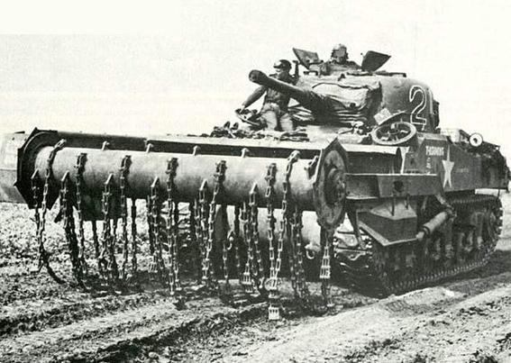
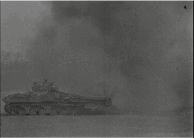
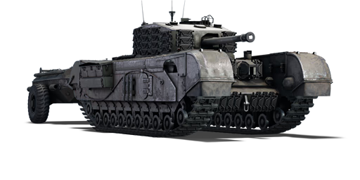
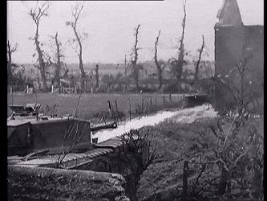

Sherman Crab (El Mayal)
Diseñado inicialmente para limpiar campos de minas en el Día D, el Sherman Crab estaba equipado con un tambor giratorio delantero del que colgaban pesadas cadenas de acero. Al girar a gran velocidad, las cadenas golpeaban el suelo con fuerza devastadora detonando las minas. Aunque su propósito era abrir camino, la imagen y el sonido del mayal despedazando la tierra creaba un terror psicológico absoluto entre la infantería enemiga, que a menudo huía en pánico antes de ser alcanzada por las cadenas.


Churchill Crocodile (Lanzallamas)
Considerado una de las armas más aterradoras de la guerra, el Churchill Crocodile reemplazaba su ametralladora frontal por un proyector de llamas pesado, alimentado por un remolque blindado con 1.800 litros de combustible espeso (similar al napalm). Podía lanzar fuego líquido a más de 100 metros de distancia, calcinando búnkeres enteros y consumiendo el oxígeno de su interior. La crueldad de morir quemado vivo hacía que las tropas amenazadas con este tanque a menudo se rindieran de inmediato. Su uso fue tan devastador que sentó precedentes para la futura prohibición internacional del uso de armas incendiarias contra objetivos humanos.

